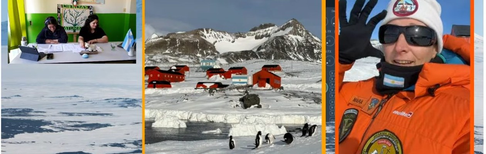

Proyectos
Del rural virtual a la Antártida
Una pregunta de nuestros estudiantes abrió la puerta a una charla con una científica que trabaja en Base Esperanza.
07 / 07
Encuentros, proyectos y vivencias que se corren del aula y llegan muy lejos.

Proyectos
Una pregunta de nuestros estudiantes abrió la puerta a una charla con una científica que trabaja en Base Esperanza.

Proyectos
Reflexiones y producciones del Área de Educación Científica y Tecnológica, en conmemoración del 2 de Abril.